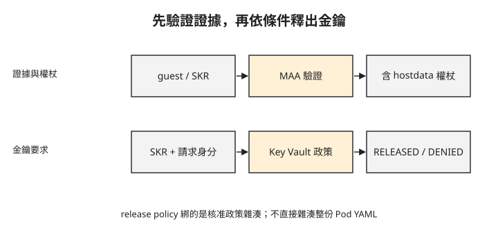

Day 8：兩個 Pod 都 Running，為什麼只有一個拿得到金鑰？¶

兩個 kata-cc Pod 都能啟動，也都使用各自有效的安全政策。但資料擁有者只願意把金鑰交給其中一份核准政策。這章會讓金鑰服務比較證明中的政策雜湊，並用允許與拒絕兩次結果，區分「能執行」與「能取得秘密」。
先認識誰驗證、誰決定釋出¶
MAA（Microsoft Azure Attestation）驗證執行環境提供的證據，並簽發包含 claim（已簽署屬性）的權杖。SKR（Secure Key Release）sidecar 協助工作負載取得證明並向 Key Vault 要求金鑰。Key Vault 是 Azure 管理金鑰、秘密與憑證的服務，本章用它保存金鑰並控制釋出條件。
Key Vault 的 release policy（金鑰釋出政策）則指定：接受哪個證明服務，以及權杖中哪些屬性必須符合條件。這和 Day 7 限制 guest agent 操作的安全政策，是兩份不同用途的政策。
本章的 hostdata 是 SNP 證據中用來綁定安全政策雜湊的欄位。SHA-256 將政策內容轉成固定長度的摘要；只要政策位元組改變，摘要通常也會改變。它不是完整 Pod YAML 的直接雜湊。
先沿著下圖看證據與決策的方向。金鑰是否釋出，由 Key Vault 根據請求者權限及 release policy 判斷。Pod Running 狀態不能決定金鑰是否釋出。

工作負載身分回答「誰在向 Azure API 發出請求」，證明與 release policy 回答「這個執行環境是否符合金鑰持有者的要求」。只完成其中一項不夠。
準備金鑰服務與工作負載身分¶
本章沿用 Day 7 的 kata-cc 環境，以及已啟用的 OIDC issuer 與 workload identity。managed identity（受控識別）是由 Azure 管理認證資訊的身分，供工作負載向 Azure 服務驗證身分，不必在程式中保存認證密碼。本章使用的 HSM（硬體安全模組）提供硬體保護來儲存金鑰及執行密碼編譯作業。下列命令建立 Key Vault Premium、MAA 與 managed identity，會產生 Azure 資源。
<rg>、<kv>、<maa>、<mid> 分別是資源群組與三種資源名稱；名稱須符合 Azure 規則。<叢集 OIDC issuer> 取自 AKS 的 OIDC issuer URL；<mid client id>、<mid principal> 分別取 managed identity 的 clientId、principalId；<kv id> 是 Key Vault 的完整資源 ID。不要把這三種 ID 互換。
先執行下方三行資源建立命令，再執行後面的查詢區塊取得 URL 與 ID，填回對應位置後，才繼續執行聯合身分與角色指派命令。
# Key Vault Premium(HSM 金鑰)、MAA 證明服務、managed identity
az keyvault create -g <rg> -n <kv> --sku premium --enable-rbac-authorization true
az attestation create -g <rg> -n <maa> -l westeurope
az identity create -g <rg> -n <mid>
# workload identity:managed identity ↔ 叢集 OIDC ↔ k8s service account
az identity federated-credential create --name skr-fic --identity-name <mid> -g <rg> \
--issuer "<叢集 OIDC issuer>" --subject "system:serviceaccount:cc-lab:skr-sa" \
--audience api://AzureADTokenExchange
kubectl create sa skr-sa -n cc-lab
kubectl annotate sa skr-sa -n cc-lab azure.workload.identity/client-id=<mid client id>
# 給 managed identity Key Vault 的密鑰角色
az role assignment create --role "Key Vault Crypto Officer" --assignee-object-id <mid principal> --scope <kv id>
az role assignment create --role "Key Vault Crypto User" --assignee-object-id <mid principal> --scope <kv id>
Workload Identity 官方文件要求 Azure CLI 2.47.0 以上；本章未記錄 Azure CLI 版號，以下採用官方文件的標準查詢寫法。先將引號中的名稱換成自己的資源名稱，CLUSTER 填 Day 7 的叢集名稱。
以下查詢 OIDC issuer、managed identity 的 clientId／principalId 與 Key Vault 資源 ID，依官方文件補上，本課沒有實跑。
RG='<rg>'
CLUSTER='<aks-cluster-name>'
MID='<mid>'
KV='<kv>'
az aks show -g "$RG" -n "$CLUSTER" \
--query oidcIssuerProfile.issuerUrl -o tsv
az identity show -g "$RG" -n "$MID" \
--query clientId -o tsv
az identity show -g "$RG" -n "$MID" \
--query principalId -o tsv
az keyvault show -g "$RG" -n "$KV" \
--query id -o tsv
四個查詢依序對應 <叢集 OIDC issuer>、<mid client id>、<mid principal>、<kv id>；最後一項是 Vault 資源 ID，不能換成金鑰 ID 或 Vault URL。參數說明見官方的 az identity show 與 az keyvault show。
聯合身分設定把 cc-lab/skr-sa 這個 ServiceAccount 連到 managed identity。consumer Pod 也必須指定此 ServiceAccount，並依 workload identity 的要求啟用注入，才能使用這條身分路徑。
Crypto Officer 包含金鑰管理權限，不能將這組寬權限配置直接視為正式環境的最小權限設計。實際部署應分開管理金鑰的人與只需要求釋出的工作負載，確認各自操作權限。
先產生政策，再計算它的雜湊¶
準備包含 app 與 mcr.microsoft.com/aci/skr:2.7 的 consumer manifest，使用 kata-cc-isolation 與 skr-sa，再依 Day 7 的方式產生政策，保存為 consumer-policy.yaml。app 需呼叫 SKR 的 /key/release，提供 MAA endpoint、Key Vault endpoint 與金鑰 ID；請求格式見 SKR API。
以下取出 annotation、解碼，再計算政策雜湊。這個抽取方式假設 annotation 是單行、沒有額外引號的輸出格式；開始前須確認只抽到一份非空的 base64 內容，解碼成功且是完整政策。
# 政策注入 consumer manifest 後,在 macOS 本機算:
POLICY_B64=$(grep 'agent.policy:' consumer-policy.yaml | sed 's/.*policy: //')
printf '%s' "$POLICY_B64" | base64 -d | shasum -a 256
# → ca8442bb3d17f7d85556b5c21682db11f2313cdbe3db1adcd27c89c3f88e720d
範例的 64 位十六進位值來自這份政策，你自己的結果通常不同。不要複製範例雜湊代替實際產物；也不要只因 shasum 印出值，就假定前面的抽取與解碼成功。
把核准的政策雜湊綁到金鑰¶
以下 release policy 限定可信任的 MAA authority、證明類型，以及 hostdata。保存為 release-policy.json 前，必須把 authority 換成 MAA 資源實際提供的完整 attestation URI；hostdata 的 ca8442bb…720d 是縮寫，必須換成上一步完整的 64 位雜湊。
{
"version": "1.0.0",
"anyOf": [{
"authority": "https://<maa>.weu.attest.azure.net",
"allOf": [
{ "claim": "x-ms-attestation-type", "equals": "sevsnpvm" },
{ "claim": "x-ms-sevsnpvm-hostdata", "equals": "ca8442bb…720d" }
]
}]
}
接著建立允許依政策匯出的 HSM 金鑰。exportable 是這個測試讓金鑰進入合格 guest 的前提，與一般不可匯出金鑰的使用方式不同。
az keyvault key create --vault-name <kv> -n skr-key --kty RSA-HSM --size 3072 \
--exportable true --policy release-policy.json
金鑰現在綁定原政策。稍後建立變更版本時，這份 release policy 必須保持不變，才能做有意義的拒絕測試。
先驗證核准版本¶
部署已產生政策的 consumer Pod。app 向本 Pod 的 SKR sidecar 要求釋出金鑰，再把結果以狀態字串提供給叢集內的 TCP Service；回應內容應只有狀態，不能包含金鑰。<service> 是這個狀態服務的位址，並非 SKR API 本身。
原驗證透過狀態服務讀到：
# app 內部:curl SKR → SKR 取 SEV-SNP report → MAA 簽 token(hostdata=ca8442bb…)
# → workload identity 呼叫 Key Vault → release policy 相符 → 放金鑰
$ curl http://<service>/ → RELEASED
RELEASED 是 app 整理後的結果，表示這組測試完成金鑰釋出。它不是原始 SNP report，也不是完整 MAA 權杖，不能當成可供獨立解析的硬體證據。
改環境變數，重新產生政策，再測拒絕¶
接著複製原 manifest，在 app 新增 TAMPER=yes，並對變更後的 manifest 重新執行政策產生工具。這一步不可省略：本章測試的是新政策能讓新 Pod 啟動，但它不在金鑰核准清單內。若只改 Pod、沿用舊政策，可能先被 guest agent 拒絕啟動，測到的會是另一個機制。
變更版政策的 SHA-256 如下：
# 篡改版的政策 hash:
a07958c9891de4f177cf6f1bf207b75d1c6ee78250f8064b968308e730c912b0
# ≠ 金鑰綁定的 ca8442bb…720d
將變更版部署為另一個 Pod 與狀態 Service，並繼續要求同一把金鑰。金鑰的 release policy 仍綁原雜湊。
skr-tampered 位於 cc-lab namespace，查詢應寫成 kubectl get pod skr-tampered -n cc-lab。修正後的寫法本課沒有實跑。下方保留原查詢與結果：
變更版 2/2 Running，表示它符合自己的啟動政策；狀態服務回 DENIED，則呈現它沒有取得金鑰。這組對照支持「釋出條件綁定核准的政策雜湊」；它沒有測試任意 Pod 欄位變更，也沒有保證所有欄位都會被政策產生器納入。
實作時若只有 DENIED，仍需區分 RBAC、證明服務、網路與 release policy 的拒絕原因，不能單憑這個回應判定 hostdata 不符合條件。
疑難排解¶
算出的 SHA-256 是空字串摘要¶
e3b0c442… 是空輸入的 SHA-256。先確認 annotation 抽取結果非空、base64 解碼成功與各命令狀態正常，再計算雜湊。
預設政策不允許 exec 或 logs¶
ExecProcessRequest 與 ReadStreamRequest 可被 guest 政策拒絕，見 Day 7 的操作限制。本章以 app 主動提供 TCP 狀態服務觀察結果，並未開放這兩項操作。狀態服務與 consumer manifest 需事先準備，不能把範例中的 <service> 直接當成現成資源。
想一想¶
- 新增環境變數後仍使用舊政策，Pod 在 sandbox 階段就失敗。這和本章 DENIED 對照測到的是同一件事嗎？
- 你同時更新變更版政策與 Key Vault 核准雜湊，再看到 RELEASED，是否仍能驗證原本的拒絕條件？
- 任意 YAML 欄位改變，都一定會改變 hostdata 嗎？應先檢查哪個產物？
小結¶
安全政策控制 guest 允許的操作，金鑰釋出政策則控制哪份已證明的政策可以取得秘密。本章先讓核准版本取得金鑰，再對變更 manifest 重產政策、保留原金鑰條件，觀察另一個可啟動 Pod 被拒絕。證據支持這組政策雜湊對照，範圍不應擴大成所有工作負載內容的全面保證。Day 9 會據此整理部署選擇與移除後的檢查。
延伸閱讀¶
想再深入，可以從這幾份開始：
- AKS 機密容器部署：政策、身分與證明服務整合。
- SKR sidecar API：金鑰釋出請求與設定。
- MAA 概觀：證據驗證與權杖角色。
Kubernetes 標誌為 CNCF（Linux Foundation）官方資產，此處作社群教學用途。